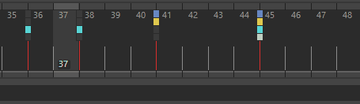

可以在“曲线图编辑器”(Graph Editor)（请参见在“曲线图编辑器”(Graph Editor)中复制和粘贴关键帧）、“通道盒”(Channel Box)或“时间滑块”(Time Slider)中复制和粘贴单个曲线上的关键帧。

在“时间滑块”(Time Slider)中复制缩放曲线（绿色）上的关键帧集
在“时间滑块”(Time Slider)上复制关键帧
- 选择已设置关键帧的对象。
- 在时间滑块(Time Slider)上单击鼠标右键，然后从“动画控件”(Animation controls)菜单中选择“带颜色编码的关键帧”(Color Coded Keys)。关键帧标记显示颜色调整钮来表示每条曲线，蓝色表示平移，黄色表示旋转，绿色表示缩放，白色表示其他。
- 按住 Shift 键并选择关键帧，然后按住 Ctrl 键将其复制到时间轴上的新位置。